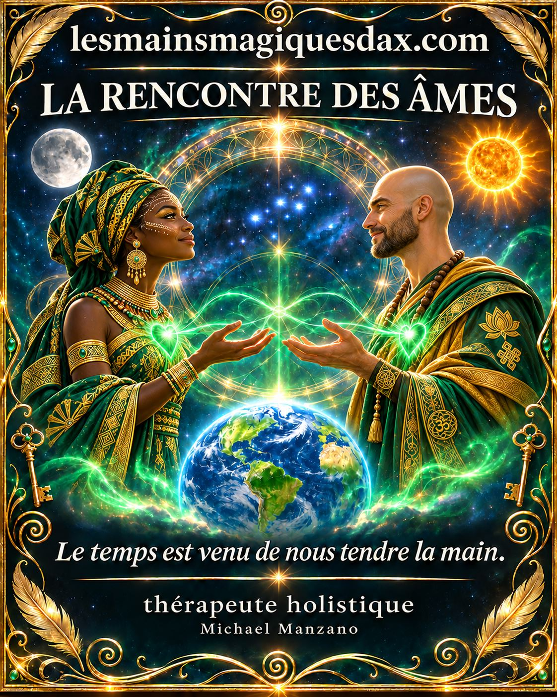

Mes conseils · Texte
La rencontre des âmes
Le temps est venu de nous tendre la main.
Par Michael Manzano, thérapeute holistique à Dax ·
Faites défiler les pages : glissez le doigt ou utilisez les flèches.

La rencontre des âmes
Nous avons traversé tant d'étoiles pour apprendre à nous reconnaître ici.
Le temps est venu de faire de nos mains tendues un commencement.
1 / 7
La rencontre des âmes
Tenons-nous la main sans nous retenir prisonniers. Laissons à chaque âme son rythme et son espace, à chaque cœur la liberté de fleurir.
C'est peut-être cela, la communion des âmes : une lumière qui en accueille une autre, deux présences qui s'écoutent et se donnent le courage de grandir.
Venus de loin, nous voici réunis sous le même ciel, les pieds sur cette Terre et l'infini au fond des yeux.
2 / 7
La rencontre des âmes
Une personne que l'on croyait dans l'ombre peut tendre une main profondément bienveillante. Une autre peut se réclamer de la lumière et pourtant blesser. Chacun peut se perdre, apprendre, réparer et choisir autrement.
Lorsque le monde nous semble inversé, regardons les gestes au-delà des étiquettes : le respect, la liberté laissée à l'autre, la douceur avec laquelle sa fragilité est accueillie.
3 / 7
La rencontre des âmes
Que ces liens trouvent aussi leur place dans notre quotidien : une écoute offerte, une parole qui apaise, une main qui soutient, un geste qui rend confiance.
Et si nos luttes prennent ici l'image d'une guerre interstellaire, qu'elle raconte ce combat intérieur pour préserver la tendresse au milieu des peurs, des blessures et de ce qui nous divise.
Œuvrer pour la lumière demande aussi du discernement. L'ombre et la clarté se mêlent parfois ; les apparences peuvent tromper.
4 / 7
La rencontre des âmes
À celles et ceux que le voyage a fatigués, puisse la rencontre offrir un refuge. Une présence auprès de laquelle le souffle s'apaise, le cœur s'ouvre et la force revient doucement, dans la communion des âmes.
Le temps est venu.
Le temps d'agir, de nous tendre la main, même au-delà du visible. Dans le paysage rêvé de l'astral, imaginons nos présences reliées par de fins fils d'énergie, une lumière verte qui circule de cœur en cœur.
5 / 7
La rencontre des âmes
Alors les distances deviennent silence. Nous déposons doucement nos armures, et ce qui semblait perdu retrouve une place où se poser.
Starseeds, âmes indigo, flammes jumelles… Autant de noms confiés aux étoiles pour raconter cette sensation étrange : avoir voyagé loin et chercher ici un peu de sa maison.
Dans ce récit cosmique, des âmes ont choisi de se réincarner ici, sur Terre, pour habiter un corps, sentir le vent sur leur visage et apprendre à donner une forme à l'amour.
6 / 7
La rencontre des âmes
De loin, de si loin… Comme un voyage dont le cœur aurait gardé la musique, le vent nous porte à travers la nuit.
Les Pléiades soufflent une poussière d'étoiles en nos cœurs. Dans nos yeux vivent des univers cachés, des mondes infinis qu'un regard suffit parfois à entrouvrir.
Il est des rencontres qui murmurent : « Je ne sais pas encore qui tu es, mais quelque chose en moi se souvient de ta lumière. »
Michael Manzanothérapeute holistique
7 / 7